Когда реклама подорожала, понадобился другой источник клиентов
Типография ЦМИК в Ярославле привлекала клиентов преимущественно через контекстную рекламу. Пока её стоимость устраивала компанию, SEO не было приоритетом. Рост расходов на рекламу стал поводом развивать органический поиск.
Задача — увеличить поисковый трафик и занять высокие позиции по коммерческим запросам в Яндексе и Google в регионе Ярославль. Особое значение имели услуги для крупных заказов: например, печать большими тиражами.
На старте основную часть поискового трафика давали запросы с названием компании, шаблоны для печати и информационная статья. Запросы, по которым ищут услуги типографии, почти не приводили посетителей.

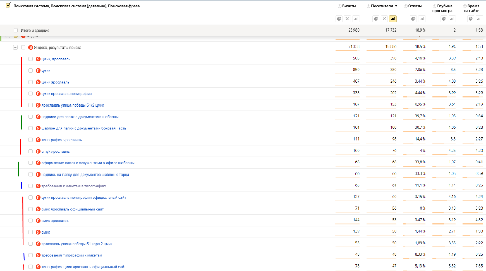
Сначала — техническая основа и страницы услуг
Аудит показал, что росту мешают не отдельные тексты, а совокупность проблем: дубли, служебные страницы в индексе, неполные метаданные и слабый ссылочный профиль.
- Индексация
- В robots.txt не было ссылки на sitemap; служебные страницы были доступны для индексации. Карта сайта содержала ссылки на страницы с ошибкой 404.
- Дубли и перенаправления
- Страницы открывались по нескольким адресам. Внутренние ссылки вели через редиректы, иногда — через цепочки перенаправлений.
- Портфолио и фильтры
- Похожие страницы портфолио, пагинация и результаты фильтра создавали множество малоценных дублей.
- Описания страниц
- У товаров не были заполнены title, а description повторяли один и тот же набор слов.
- Внешние ссылки
- Рейтинг домена составлял 2,7; на сайт ссылался 41 домен. Ссылочный профиль требовал развития.
Посмотреть примеры из аудита

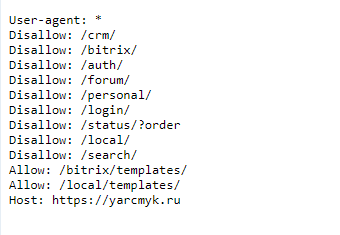

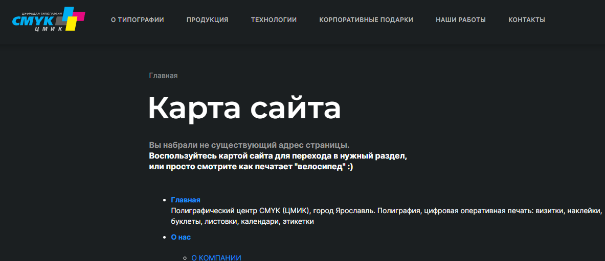

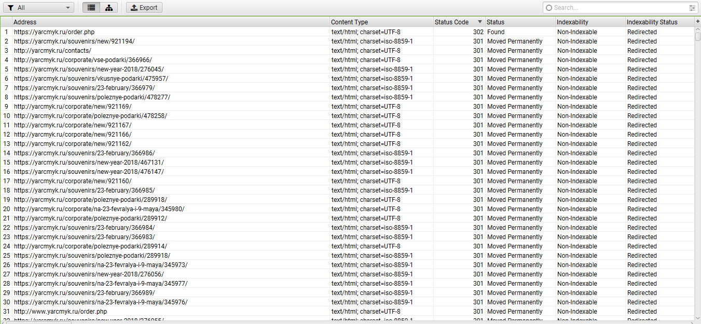

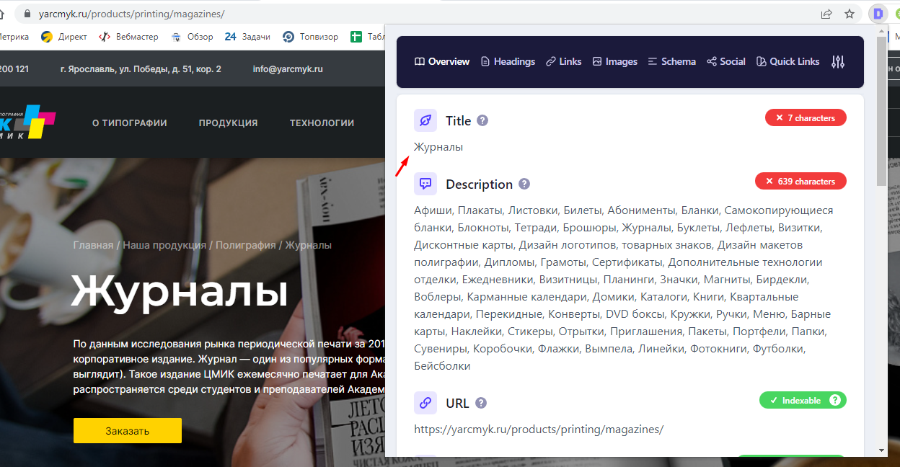

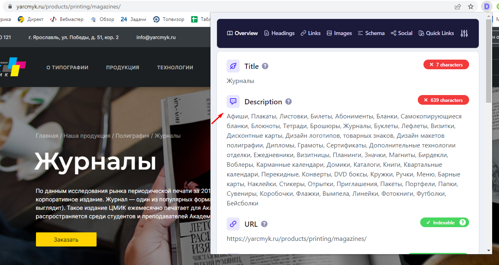

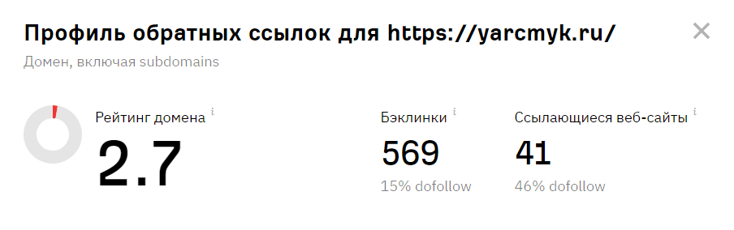
Связали технические доработки, семантику и контент
- Устранили технические препятствияУбрали дубли, доработали robots.txt, закрыли от индексации лишние страницы, добавили sitemap.xml и доработали микроразметку.
- Собрали семантикуПодготовили подробное ядро под услуги типографии, информационные запросы и смежные темы.
- Расширили структуру каталогаДоработали каталог и создали дополнительные посадочные страницы под запросы, по которым ищут услуги компании.
- Доработали описания страницУточнили содержание и метаданные, чтобы страницы лучше отвечали на запросы потенциальных клиентов.
- Начали развивать ссылки и блогФормируем ссылочный профиль, составили контент-план и пишем информационные статьи.
Большой сайт требовал системной работы
На сайте много страниц услуг и новостей. Изменения структуры затрагивали большой объём контента, а портфолио создавало множество похожих страниц, попадавших в индекс. Поэтому технические правки и развитие посадочных страниц шли вместе.
Позже часть информационного трафика начала теряться из-за нейроответов в поиске: пользователь получает ответ в выдаче и не всегда переходит на сайт. В ответ на это часть работы сместили в сторону GEO-продвижения — присутствия сайта в ответах нейросетей.
Сотни коммерческих запросов вышли в топ-10
Сравниваем замеры от 16 августа 2023 года и 12 мая 2026 года по одному набору из 478 запросов. В топ-3 Яндекса число запросов выросло с 1 до 53, в Google — с 3 до 177.
| Поисковая система | Группа позиций | 16.08.2023 | 12.05.2026 |
|---|---|---|---|
| Яндекс | Топ-3 | 1 | 53 |
| Яндекс | Топ-10 | 11 | 197 |
| Яндекс | Топ-30 | 148 | 366 |
| Яндекс | Топ-100 | 275 | 396 |
| Топ-3 | 3 | 177 | |
| Топ-10 | 13 | 315 |

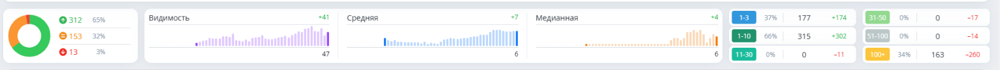

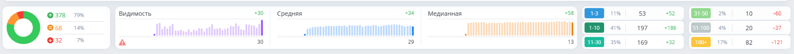
Растёт трафик на коммерческие страницы
Оцениваем посетителей из поиска, которые пришли сразу на страницы услуг и каталога: разделы /products/, /technology/, /catalog_new/ и /business/. Источник данных — Яндекс Метрика, значения по месяцам.
В Google этот трафик вырос примерно со 180 посетителей в месяц в начале 2023 года до примерно 650 на пике в сентябре 2025 года — около 3,6 раза.

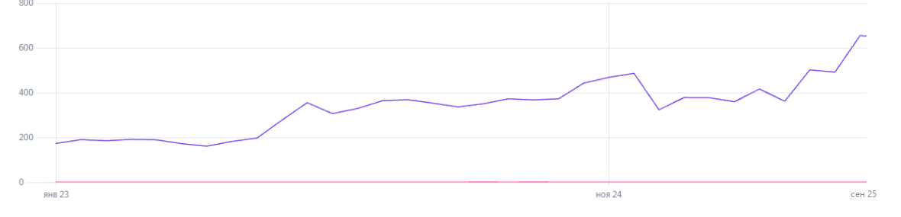

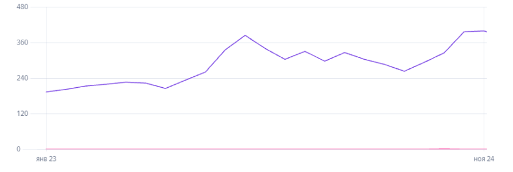
Периоды графиков различаются: данные Google представлены до сентября 2025 года, Яндекса — до ноября 2024 года. Это показатели посещаемости, а не количество заявок или продаж.
Поиск стал рабочим каналом привлечения
Агентство интернет-маркетинга Редстар устранило технические препятствия, расширило охват коммерческих запросов и увеличило поисковую видимость типографии. SEO стало дополнительным каналом привлечения наряду с контекстной рекламой.
Такой подход подходит компаниям с большим каталогом услуг, когда дубли, ошибки индексации и неполная структура мешают продвигаться по коммерческим запросам.